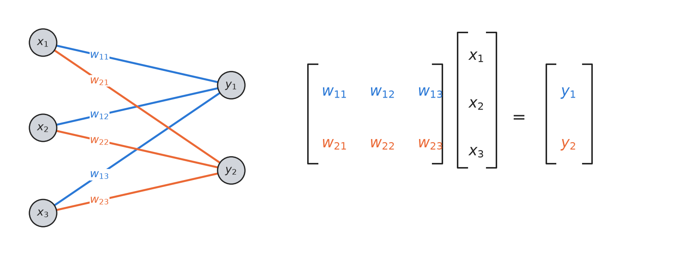
63 AI: Inside a language model
Every time you send a message to an AI assistant, a program takes your text, turns it into numbers, pushes the numbers through a very large neural network, and gets back a probability for every possible next word. It picks one, adds it to the text, and does the whole thing again. You have heard this described in words. In this chapter you look inside a working language model and watch it happen, number by number.
The model is GPT-2 small, which OpenAI released in 2019 (Radford et al., 2019). It has 124 million parameters, which is tiny next to the assistants you use today, but it is built the same way, and it is small enough to run inside a web browser. The tool you will use to look inside it is the Transformer Explainer (Cho et al., 2026), a web page made by a research group at Georgia Tech that runs GPT-2 on your own computer and draws every step of the calculation.
How to work through this chapter
The chapter follows the Transformer Explainer from left to right: first how text becomes numbers, then the attention that lets each word look at the others, then the layers that do the rest of the work, and finally how the numbers become a probability for every next word. Each section explains one part of the picture in the Explainer and ends with questions. Every question has a single answer that you can read off the screen, and the answers are hidden in folded boxes under the questions. Find your answer in the Explainer first, write it down, and only then open the box. If your answer and the box disagree, the disagreement is the interesting part. Go back and find out why.
Open the Transformer Explainer on a laptop, not a phone. On a phone it only shows a few precomputed examples. The first time you open it, it downloads the model, which takes a minute, and until the download is finished it ignores any text you type. When it is ready, delete the example text in the box at the top and type this sentence, exactly as it is written here, with no full stop at the end:
The virus infects the cell and makes copies of itsThen press Generate. Everyone in the course uses this same sentence, so everyone sees the same numbers, and the figures in this chapter were computed from it with the same model. Your screen may differ from the figures in the last decimal. One small trap: when you click into the text box afterwards, the Explainer adds the word it predicted to the end of your sentence. If that happens, delete the added word and press Generate again before you read any numbers.
Before we open the model, we need one idea that the Explainer takes for granted, and that ties the network you are about to see to the networks of neurons you met in From neuron to network.
Layers of neurons are matrices
A neuron computes a weighted sum of its inputs. A layer is a row of neurons that all receive the same inputs, each with its own weights. In Figure 63.1, a layer of two neurons receives three inputs. The first neuron computes \(y_1 = w_{11}x_1 + w_{12}x_2 + w_{13}x_3\) and the second computes \(y_2 = w_{21}x_1 + w_{22}x_2 + w_{23}x_3\). Each weight belongs to one line in the drawing, and there is a line from every input to every output, which is why this is called a fully connected layer.
If you write the weights in a table with one row per output neuron and one column per input, the table is called a matrix, and the inputs written as a column are called a vector. Multiplying a matrix by a vector means exactly this: for each row, multiply the row’s numbers by the inputs one by one and add up the products. So a fully connected layer and a multiplication of a matrix by a vector are the same thing, drawn in two ways. The drawing is easier to understand, and the matrix is how the computer does it, because computers, and especially the graphics chips used for AI, are built to do huge numbers of these multiplications very quickly. When the Explainer shows you a grid of colored cells and says that one matrix is multiplied by another, you can always picture layers of neurons and the lines between them. In GPT-2 the layers are wide. One of them takes 768 inputs and has 3,072 neurons, so its matrix has 768 × 3,072 = 2,359,296 weights, one for each line.
The second idea is about what happens when a network reads a sequence. GPT-2 reads your sentence as a row of eleven pieces, and each piece is described by a list of 768 numbers. One way to process the sentence would be a single enormous layer with a line from every number of every piece to every output. Language models do something else. They apply one and the same small network to every piece separately, with the same weights each time, as if the network were copied along the sentence.
The same trick has a name in other parts of machine learning. A network that slides along a sequence and applies the same weights at every position is called a convolution, and you have already met one in biology without the name. A position weight matrix for a transcription factor binding site holds a score for each base at each of, say, six positions. Sliding it along a DNA sequence and adding up the scores at every position is a convolution with a window six bases wide. The right half of Figure 63.2 shows a convolution with a window of three: every output neuron is connected to three neighboring inputs, always with the same three weights.
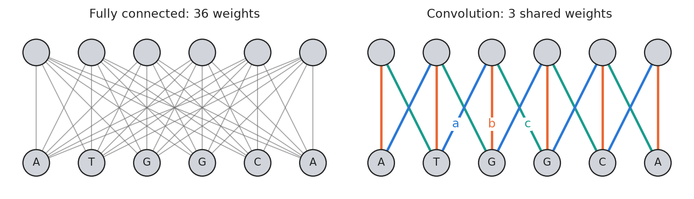
Sharing weights has two big advantages. There are far fewer weights to learn, and the network works for a sequence of any length, because it does not care how many times it is copied. GPT-2 takes the idea to its extreme. Most of its layers use a window that is only one piece wide: the same layer of neurons is applied to each piece on its own, without looking at the neighbors at all. The program code that defines GPT-2 even calls these layers Conv1D, one-dimensional convolutions. If almost every layer looks at one piece at a time, the pieces have to exchange information somewhere else, and they do that in the attention layers. Attention is the one place where the pieces of the sentence are connected to each other, and its connections are drawn in a new way, which you will meet in Looking back at the sentence.
Exercise 63-1
Work these out on paper before you open the answers.
The whole picture
When you have typed the sentence and pressed Generate, the Explainer shows the whole model as one flow from left to right, sketched in Figure 63.3. On the left, your sentence is cut into pieces, and each piece is turned into a list of 768 numbers. The lists then pass through a transformer block, which consists of an attention layer followed by a small network of fully connected layers. GPT-2 has twelve such blocks, one after the other, all built the same way but with their own weights. The Explainer draws only the first one and stacks the rest behind it. On the right, the list of numbers belonging to the last piece of the sentence is turned into a probability for each of the 50,257 pieces the model knows, and one of them is chosen as the next word.
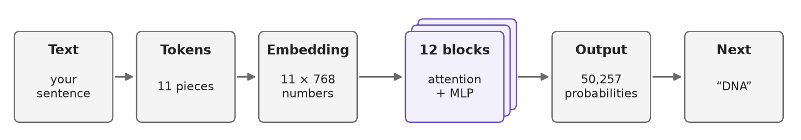
Each of the four sections that follow zooms in on one of these boxes. In the Explainer you zoom in by clicking a box, or the magnifying-glass icon next to it, and click again to zoom out. Hovering the mouse over almost anything shows a short explanation or the numbers behind it.
Exercise 63-2
Type the sentence into the Explainer and press Generate, without zooming in on anything yet.
From text to numbers: the embedding
A neural network can only compute with numbers, so the first job is to turn the text into numbers. The text is cut into tokens, and each token is looked up in a fixed list called the vocabulary. GPT-2’s vocabulary has 50,257 tokens. Common words are tokens of their own, but a word that does not appear in the vocabulary is cut into pieces that do. The list was made once, before training, by repeatedly gluing together the pairs of characters and pieces that occurred most often in a large amount of text. That is why the pieces follow how often letters occur together, and not grammar or biology. A space belongs to the token after it, so ” virus” with its leading space and “virus” without one are two different tokens with different numbers. The Explainer does not show the spaces, but they are there. Table 63.1 shows how GPT-2 cuts our sentence.
| Position | Token | Token ID |
|---|---|---|
| 0 | The |
464 |
| 1 | ·virus |
9,471 |
| 2 | ·infect |
7,580 |
| 3 | s |
82 |
| 4 | ·the |
262 |
| 5 | ·cell |
2,685 |
| 6 | ·and |
290 |
| 7 | ·makes |
1,838 |
| 8 | ·copies |
9,088 |
| 9 | ·of |
286 |
| 10 | ·its |
663 |
The token ID is a name and not a measurement. Token 9,471 (” virus”) is no more similar to token 9,472 than to token 1. So the first layer of the network replaces each token by a list of 768 numbers, its token embedding. GPT-2 keeps these lists in a table with one row per token in the vocabulary, 50,257 × 768 = 38,597,376 numbers in all, almost a third of the whole model. Looking up a row in this table is the same as a fully connected layer with 50,257 inputs, all of them 0 except a single 1 at the token’s ID: the weighted sum then picks out exactly the weights belonging to that one input.
Nobody chose the numbers in the table. They are weights, set by training like all the others, and training places tokens that are used in similar ways at similar points. You can measure how similar two embeddings are by how much their lists of numbers point in the same direction. In Figure 63.4, “virus”, “bacteria”, “DNA”, “RNA” and “protein” are more similar to each other than to “car”, “truck” and “house”, and “DNA” and “RNA” are among the most similar pairs. GPT-2 was never told any biology. Placing the words this way simply made it better at predicting text. The odd one out is “cell”, which is about as close to “car” as to “DNA”. In the text GPT-2 was trained on, a cell is often a phone, and a token has only one embedding, whatever it means in a particular sentence. Telling the meanings apart is left to the layers that follow.
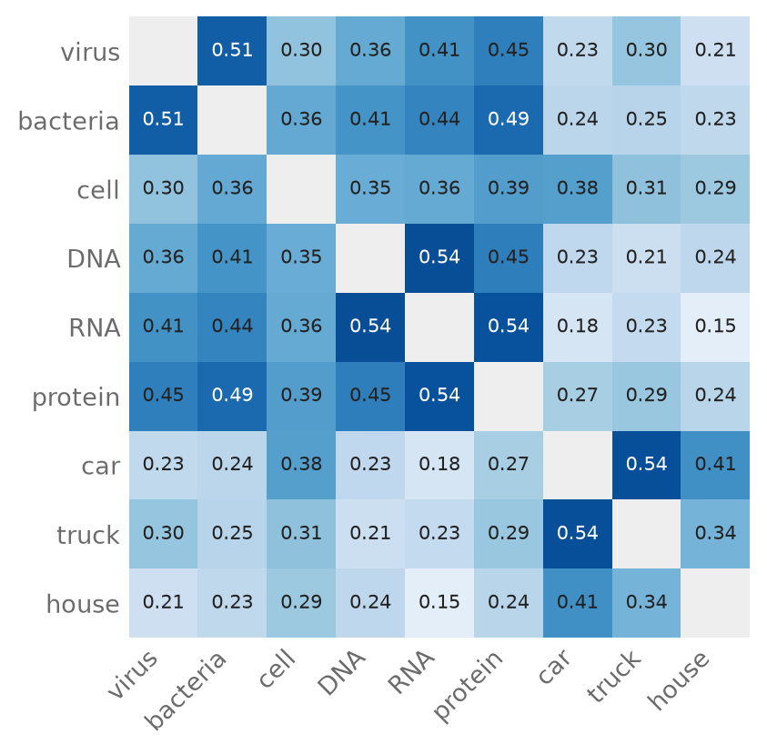
The token embedding says which token it is, but not where in the sentence it sits, and the order of words matters. So GPT-2 has a second table with one row of 768 numbers for each position, 0, 1, 2 and so on, up to 1,023, which is the longest text GPT-2 can read at once. The final embedding of a token is its token embedding plus the position embedding for its place in the sentence, added number by number, as in Figure 63.5. The position embeddings, too, were learned in training.
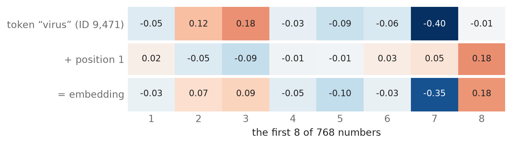
The way tokens are cut has consequences you will meet when you use an assistant. The model never sees letters, only token numbers. A DNA sequence reaches it as a handful of chunks of a few letters each, chosen by how often they occurred in the training text, so counting the Gs in a sequence or writing its reverse complement is hard for a language model even though it takes three lines of Python.
Exercise 63-3
Zoom in on the embedding, which is the leftmost part of the Explainer. Use the Explainer to answer, not Table 63.1.
Looking back at the sentence: attention
To predict what follows “makes copies of its”, the model has to know whose copies they are. The word “its” refers to something earlier in the sentence, and the list of numbers for “its” must somehow take in information from the word it refers to. This is what the attention layer does, and it is the only layer in GPT-2 where the tokens of the sentence exchange information.
Attention starts with three fully connected layers that are applied to every token separately, in the shared-weight way of Figure 63.2. From the embedding of each token they compute three new lists of numbers, called the query, the key and the value. You can think of the query as what the token is looking for, the key as what it has to offer, and the value as what it passes on to a token that is interested. To decide how much attention “its” should pay to “virus”, the model multiplies the query of “its” with the key of “virus” number by number and adds up the products. This is called a dot product, and it is large when the two lists have large numbers in the same places, that is, when what one token is looking for matches what the other offers. The model does this for every pair of tokens, which gives a square table of scores.
Three more steps turn the scores into weights. The scores are divided by 8, the square root of 64, which is how many numbers each query and key holds (more about that below). This keeps them from getting too large. Then every score of a token for a token after it is set to minus infinity. This is the mask, and it means that a token can only look back at itself and the tokens before it, never ahead. That is a must for a model that is trained to predict the next token: if it could look ahead, it would just read the answer. Finally, each row of the table goes through softmax, which turns the scores into positive numbers that add up to 1. A score of minus infinity becomes exactly 0.
The result is the attention table in Figure 63.6. Each row belongs to one token and says how its attention is divided among the tokens before it. The new list of numbers for “its” is then the values of all the tokens, mixed in proportion to the weights in its row. If the weight for “virus” is large, “its” takes in a lot of what “virus” has to offer.
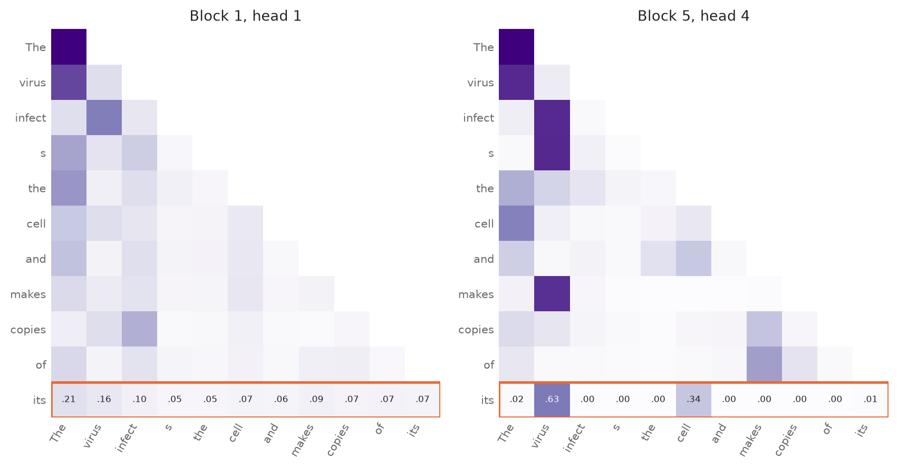
Now compare attention to the layers in Layers of neurons are matrices. In Figure 63.7, the attention of “its” in block 5, head 4 is drawn the same way as those layers, as lines into a neuron, with the thickness of each line showing its weight. The difference is where the weights come from. In a fully connected layer, the weights are learned in training and stay the same whatever text comes in. In attention, the weights of these lines are computed afresh from the queries and keys of the text that is actually there. Feed the model a different sentence and the same head draws different lines. Training sets the weights of the layers that compute the queries, keys and values. So what a head learns is a way of deciding where to look, which it then applies to whatever text it is given.
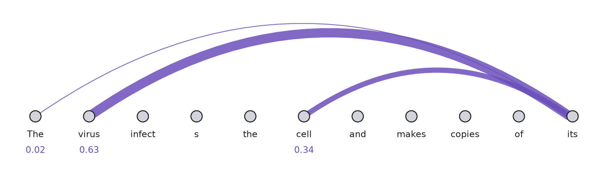
A single set of queries, keys and values can only look for one thing at a time, so each attention layer has twelve of them working side by side, called heads, each with its own weights and each working on lists of 64 numbers. Their twelve results are glued together into a list of 12 × 64 = 768 numbers and passed through one more fully connected layer. With twelve heads in each of the twelve blocks, GPT-2 has 144 heads in all, and nobody told any of them what to look for. Some learn something we can put a name to, such as linking a pronoun to the word it refers to. Many do not. Figure 63.8 shows, for every head in the model, how much attention “its” pays to “virus”. Most heads pay little, and a few pay a lot. A large share of the attention, on average about half of it across all heads, goes to the very first token, “The”. Heads seem to use the first token as a place to park their attention when there is nothing in particular they are looking for (Xiao et al., 2024).
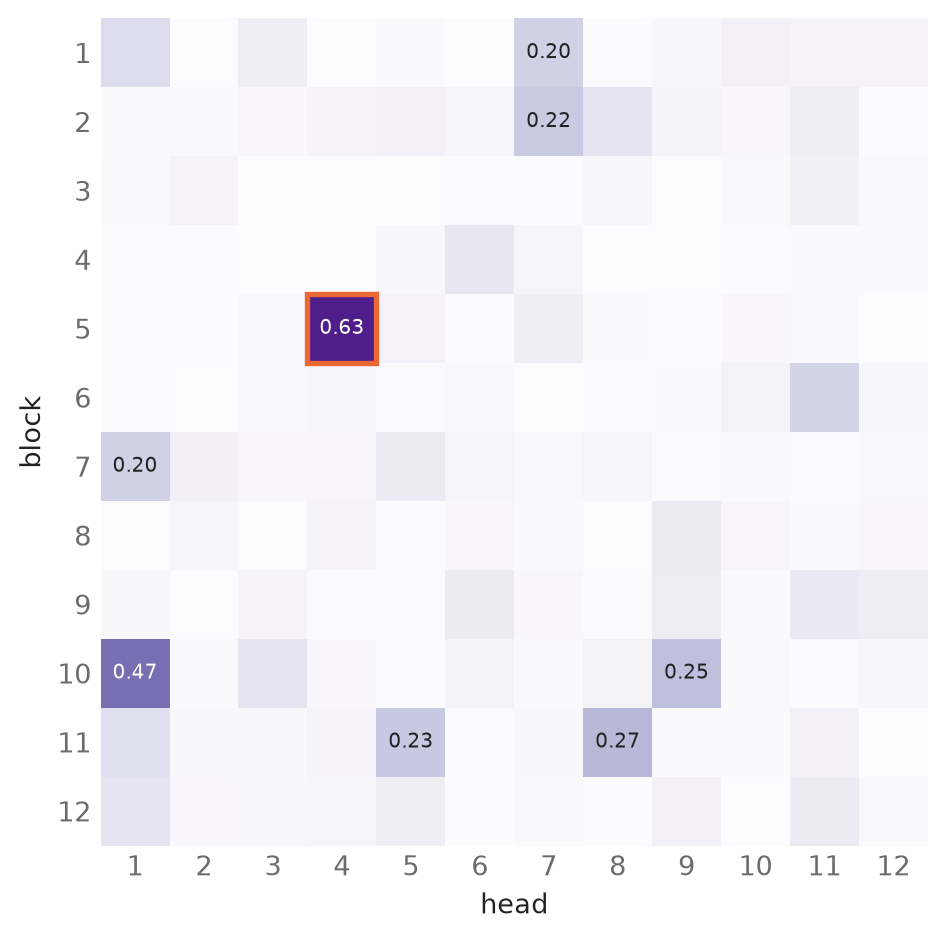
Exercise 63-4
Zoom in on the attention part of the first transformer block. The Explainer starts in block 1, head 1, and shows the attention table as a grid of purple cells. Hovering over a cell shows its weight. Zooming in further shows the dot products, the scaling and mask, and the softmax as separate grids.
The rest of the block
After the attention layer, each token’s list of 768 numbers goes through a small network of two fully connected layers, which the Explainer calls the MLP, short for multi-layer perceptron. The first layer has 3,072 neurons, four times as many as there are inputs, with an activation function called GELU, a smooth relative of the ReLU you have met before. The second layer brings the 3,072 numbers back down to 768. This network is applied to each token on its own, with the same weights for every token, as Figure 63.9 shows. It is the one-token-wide convolution from Layers of neurons are matrices.
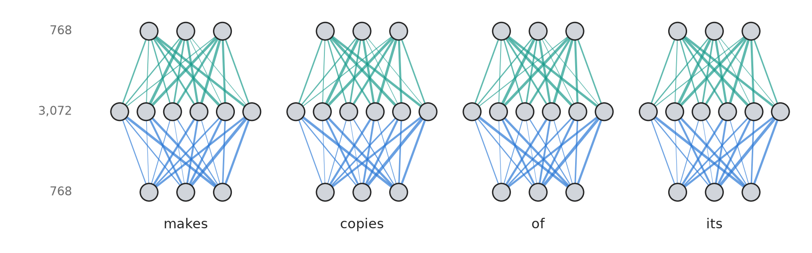
Nobody fully understands what the MLPs do, but they hold most of the model’s weights, and studies of them suggest that much of what a model has picked up about the world, such as which words go with which facts, is stored there (Geva et al., 2021). Each MLP has 768 × 3,072 + 3,072 × 768 = 4,718,592 weights. Over twelve blocks that comes to nearly half the parameters of GPT-2.
Two details complete the block, and the Explainer draws them as small dots and lines between the bigger parts. The first is that neither the attention layer nor the MLP replaces a token’s list of numbers. Each computes a change, which is added to the list it received. These shortcuts are called residual connections, and they mean that each layer only has to work out what to add, while everything earlier flows past it unchanged. The second is layer normalization, which before each attention layer and each MLP rescales every list so that its numbers have a mean of 0 and a standard deviation of 1, and then stretches and shifts them by learned amounts. This keeps the numbers from drifting to extreme values as they pass through the twelve blocks.
So the list of numbers for each token runs through twelve blocks and is refined a little in each. You can get a rough idea of how the prediction forms by taking the list for the last token after each block and sending it straight to the output layer, as if the model ended there. Figure 63.10 shows the result. Up to block 9, the model’s best guess is “own”, which is a sensible continuation of “makes copies of its” when you only know the grammar. Only in blocks 10 to 12 does “DNA” take over, once the information about the virus has been worked in. The early guesses should be taken with some salt, because the output layer was only trained to read the list after the last block, but the picture of a guess that is gradually reshaped from block to block is borne out by many such experiments.
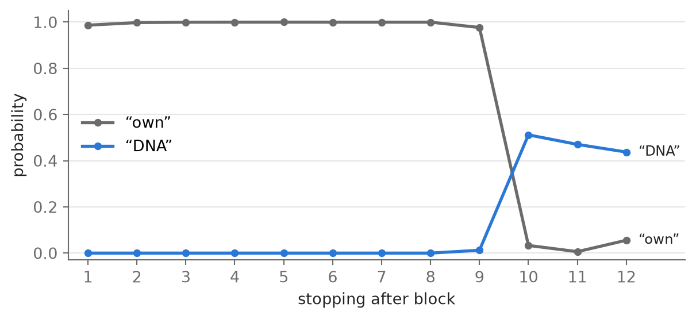
Exercise 63-5
Zoom in on the MLP in the first block, and hover over its parts to see their sizes.
From numbers to the next word
After the twelfth block, the list of 768 numbers for the last token, “its”, is sent through one last fully connected layer with 50,257 neurons, one for each token in the vocabulary. GPT-2 reuses the embedding table for the weights of this layer, so a token gets a high score when the list of numbers for “its” points in the same direction as that token’s embedding. The scores are called logits. Only the list for the last token is used, because only the last token has seen the whole sentence.
The logits are turned into probabilities by softmax, the same function the attention layer uses. It raises \(e\) to the power of each score, which makes every number positive and makes high scores much higher than low ones, and then divides each result by their total so that they add up to 1. A high score becomes a high probability. Before softmax, the scores are divided by a number called the temperature. A temperature below 1 makes the differences between the scores larger, so the most likely token becomes even more likely. A temperature above 1 makes the differences smaller and evens the probabilities out. Figure 63.11 shows the effect.
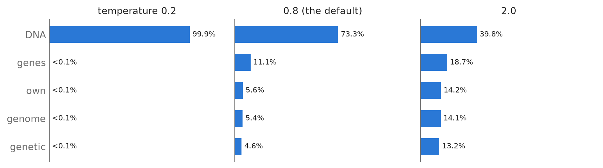
Last comes the choice. The model could always take the most likely token, but that gives dull and repetitive text, so assistants usually sample: they draw a token at random, with each token’s chance of being drawn equal to its probability. Two settings limit the draw to the likely tokens. Top-k keeps only the k most likely tokens and throws away the rest, and top-p keeps the most likely tokens until their probabilities add up to at least p. In both cases the probabilities of the kept tokens are rescaled to add up to 1 before the draw. The Explainer starts with top-k and k = 5. To save time it also only looks at the 50 highest logits before it does any of this, and treats the other 50,207 tokens as if they were impossible. At the default temperature those tokens together have only about 2% of the probability, so the bars change very little, but top-p can come out slightly differently than it would in GPT-2 without the shortcut. The answers below are computed the Explainer’s way.
When a token has been drawn, it is added to the end of the text, and the whole calculation runs again on the longer text to choose the token after that. You can do this by hand in the Explainer: clicking into the text box adds the drawn token to the end of your sentence, and Generate runs the model again on the longer text. An assistant does the same thing automatically, which is how it writes its reply one token at a time.
Exercise 63-6
Zoom in on the output on the right of the Explainer. The temperature slider and the top-k and top-p settings are above it. Before you move a slider, decide what you think will happen to the probability of “DNA”, and then move it to check.
What you have seen
Everything an AI assistant does is built from the steps you have just watched, in a much larger model. Text is cut into tokens chosen by how often pieces of text occur, so the model sees chunks of letters and never single letters. Each token becomes a list of numbers learned in training, in which related words end up close together. Twelve blocks of attention and fully connected layers then refine those lists. In GPT-2 the fully connected layers treat each token on its own, with the same weights for all of them, and attention is the only place where tokens take in information from each other. Its connections are computed afresh from each new text. At the end, the model gives a probability for every token in its vocabulary, and a token is drawn at random from the most likely ones.
Several things you will notice about assistants follow directly from this. An assistant can give a different answer to the same question, because the next token is drawn at random. It can state something false with complete fluency, because a token is chosen for being likely given the text, and nothing in the calculation checks it against the world. In our sentence, “genes” and “cells” were never far behind “DNA”, and in a different sentence the wrong word can just as easily be the likely one. It has no memory between messages, because all it ever sees is the text in front of it. When an assistant seems to remember what you said earlier in a chat, it is because the whole conversation is sent to it again as one long text. And it is hard to predict what a particular weight or head does, because nobody chose any of them. You saw one head that links a pronoun to its noun, and 143 others that do things nobody has named.
GPT-2 was large for its time and is small now. Today’s assistants have more blocks, wider layers, more heads and far longer texts they can read at once, and they are trained on much more data, with further training to make them answer questions helpfully. But they are built from the same parts you have seen here, and they still work one token at a time.